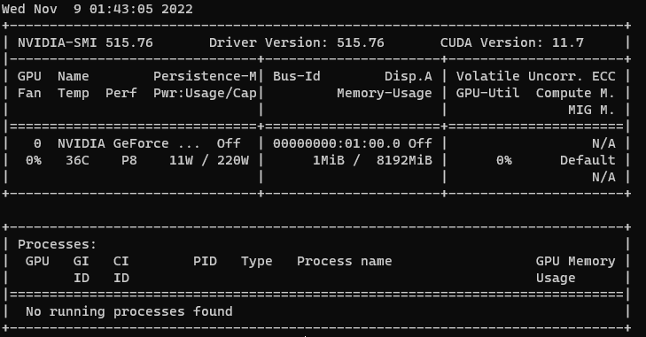

docker部署stable-diffusion-webui
介绍
stable-diffusion无疑是现在最热门的AI绘画模型了，stable-diffusion-webui提供了一个简单的通过web图形化调用的方法，但可惜没有提供对应的docker镜像，这里就尝试构建一个，方便之后的使用和分享。
搭建
环境是一台ubuntu22.04服务器，配一张3070显卡。
docker安装以及显卡驱动的安装就省略吧。
从安装NVIDIA Container Toolkit开始。
按照nvidia的指南
设置软件包存储库和 GPG 密钥：
distribution=$(. /etc/os-release;echo $ID$VERSION_ID) \
&& curl -fsSL https://nvidia.github.io/libnvidia-container/gpgkey | sudo gpg --dearmor -o /usr/share/keyrings/nvidia-container-toolkit-keyring.gpg \
&& curl -s -L https://nvidia.github.io/libnvidia-container/$distribution/libnvidia-container.list | \
sed 's#deb https://#deb [signed-by=/usr/share/keyrings/nvidia-container-toolkit-keyring.gpg] https://#g' | \
sudo tee /etc/apt/sources.list.d/nvidia-container-toolkit.listapt安装
sudo apt-get update
sudo apt-get install -y nvidia-docker2
sudo systemctl restart docker测试
sudo docker run --rm --gpus all nvidia/cuda:11.0.3-base-ubuntu20.04 nvidia-smi能看到nvidia-smi就算成功了

搭建docker镜像
基础镜像就选择 nvidia/cuda:11.3.1-devel-ubuntu20.04
然后坑就来了
cuda版本
因为webUI默认使用的torch是pip install torch==1.12.1+cu113 --extra-index-url https://download.pytorch.org/whl/cu113,所以这里要选择对应的11.3版本的cuda。
用户要求非root
WebUI脚本里去限制了root用户启动，这里在dockerFile里创建非root用户来启动
groupadd -r admin && useradd -r -g admin -m admin \
&& mkdir /workdir && chown admin:admin /workdir
别忘了赋予相应的权限。
网络代理
很多库和git仓库都要去下载，要设置好对应的代理，如果想打包时就使用代理，可以在~/.docker/config.json中配置
{
"proxies":
{
"default":
{
"httpProxy": "http://192.168.31.5:7890",
"httpsProxy": "http://192.168.31.5:7890",
"noProxy": "127.0.0.0/8,localhost"
}
}
}
python版本
虽然要求是3.10，但实测3.8也是可以的，但再低3.6好像就不行了。
GPU配置
docker-compose.yml中配置
deploy:
resources:
reservations:
devices:
- capabilities: [gpu]
dockerfile中使用Python-venv
方便起见，shell选用bash
SHELL ["/bin/bash", "-c"]
这里Dockerfile中的每一行 RUN 都是一个不同的过程。如果分开写，比如
RUN source venv/bin/activate
RUN pip install opencv-python-headless
是没有效果的。
一定要连在一起
RUN source venv/bin/activate && pip install opencv-python-headless
Dockerfile
FROM nvidia/cuda:11.3.1-devel-ubuntu20.04
SHELL ["/bin/bash", "-c"]
RUN apt-get update \
&& apt-get install git wget python3 python3-venv python3-pip -y \
&& groupadd -r admin && useradd -r -g admin -m admin \
&& mkdir /workdir && chown admin:admin /workdir
USER admin
WORKDIR /workdir
RUN git clone https://github.com/AUTOMATIC1111/stable-diffusion-webui.git
COPY model.ckpt /workdir/stable-diffusion-webui/models/Stable-diffusion/
WORKDIR /workdir/stable-diffusion-webui
ENV PYTHONUNBUFFERED=1
RUN ./webui.sh --skip-torch-cuda-test --exit
RUN source venv/bin/activate && pip install opencv-python-headless
CMD ./webui.sh --listen- 这里的model.ckpt可以去huggingface下载，选择合适的stable-diffusion模型即可。
RUN ./webui.sh --skip-torch-cuda-test --exit这里是把第一的初始化（安装依赖、下载仓库）也放到镜像中了- 默认只监听127.0.0.1，添加–listen以监听0.0.0.0，默认端口是7860，这里也通过nginx反代出去了。
docker-compose
version: "2.3"
services:
app:
image: stable-diffusion-webui-docker:0.1
container_name: stable-diffusion-webui
runtime: nvidia
environment:
- HTTP_PROXY=http://clash:7890
- HTTPS_PROXY=http://clash:7890
- no_proxy=localhost,127.0.0.1,::1
deploy:
resources:
reservations:
devices:
- capabilities: [gpu]
networks:
default:
external: true
name: nginxproxynet这里也可以选择配置volume，方便之后的替换模型
volumes:
- ./Stable-diffusion:/workdir/stable-diffusion-webui/models/Stable-diffusion
测试
最后随便在网上找点提示词试一试，模型权重就用runwayml/stable-diffusion-v1-5，


再整个二刺螈的模型权重试试waifu-diffusion-v1-3